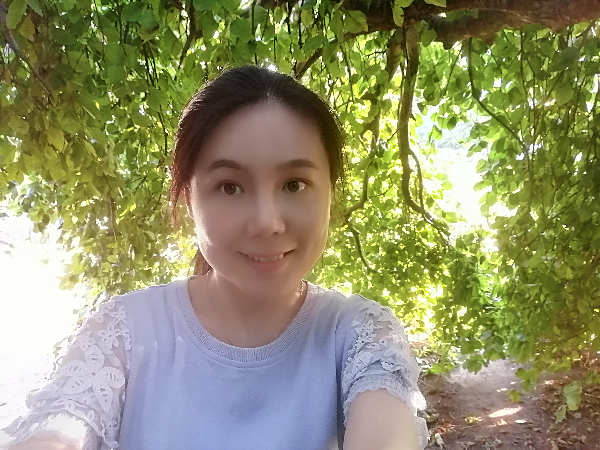
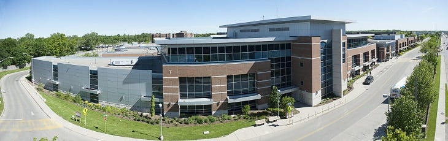
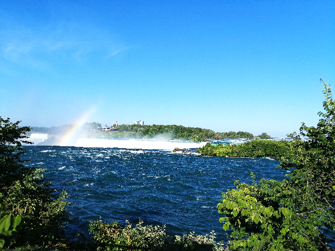
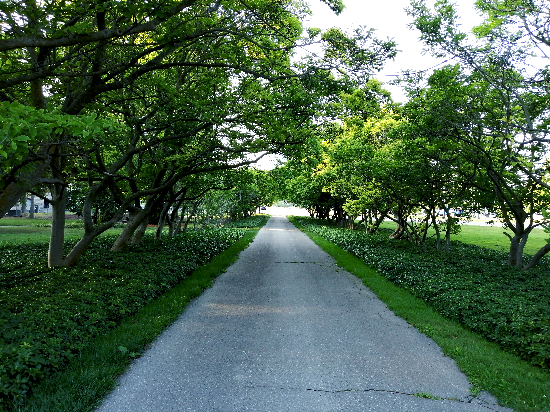
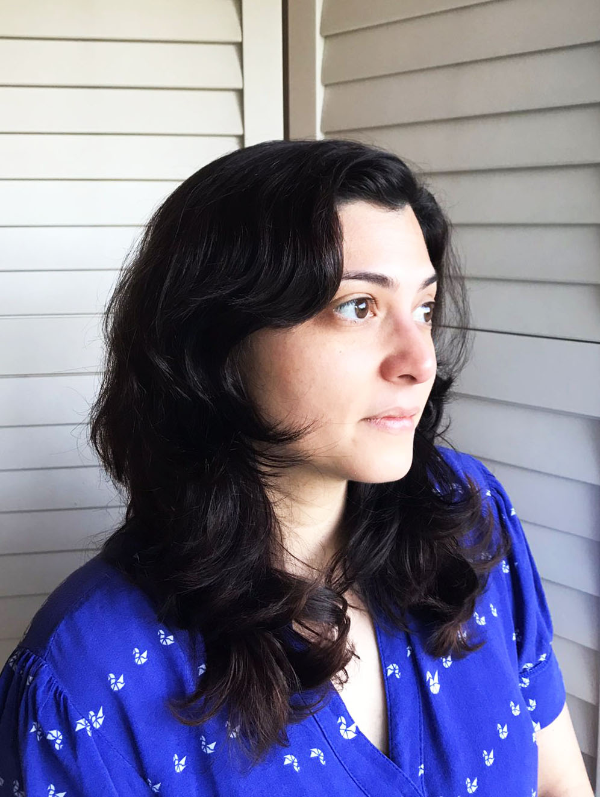

About me
I would like to share my working experience with you. Now, I am studying in Interactive Media Design at Fanshawe College. Before as an education consultant, I worked as a copywriter for more than three years, including part-time jobs in college and freelance writing. I like writing which helps me express my real idea and does not hurt others. Besides, writing is very silent and is a very powerful tool in many situations. I insisted that I would be a very excellent copywriter one day. However, my career goal has changed because of my educational experiences. I decided to apply to a oversee university of college because I would like to experience a fresh environment. I spent many years studying English and applying to universities. During that time, I met different kinds of friends who wanted to go to an overseas university, but some of them gave up because they were afraid of hard studying English for a long time. In the end, I applied to Blinn College in Texas. I studied Business as a part-time form for more than one year. However, I found I was fond of media and relative things. I decided to transfer my credits to Interactive Media Design. I chose this major because I thought interactive media design can be used in many field. Besides, I worked in a media company and knew what design was. I had confidence to study the major well and would get a good job. As for my experience, I did not forget how to write the advertisement text and I also knew how to make the picture pretty. Although the copywriter was different from the designer, I did not feel confused but exciting because I enjoyed in design field. At present, my career goal is to be a good web designer. If I am good at code, I am willing to be a web developer. I want to get into a fresh field which means I can develop my working skills. If you have any questions about me, you can contact me.
My hobbies
watching TV, Yoga, Reading, shopping, traveling, etc.My traveling experience
I've been Texas for 3 years and now I have been living Oshawa , ON for 2 years. I like here because the weather is so cool.I was born in China and my hometown was so hot.

About Our Team
Our team consists of three people: Jackson, Cristine and me. We decided to get together to make the project because of Cristine. She contacted me and Jackson.Cristine and Jackson both are so great.In the past, I always made the whole project by myself.Now, they are so kind and earnest. I think our team is so great and we will make a good project.Good Sentence
Your vision will become clear only when you look into your heart. Who looks outside, dreams. Who looks inside, awakens.Carl Jung

Contact
Jackson Dostal
My name is Jackson Dostal. I am from Canada and I live in Brantford, Ontario. I have one sister and one brother in my family. My favourite sport to play is badminton, but I also play soccer, ball hockey, and vollyball. Some movies that I enjoy watching are Pacific Rim, 21 Jump Street, and Now You See Me. I personally enjoy spending time with my friends aswell as playing video games and watching TV. The video game I enjoy playing the most is rocket league. Some foods that I like to eat is tacos, sushi, and pizza. I'm looking forward to learning at Fanshawe.
Cristine Galvão de Noronha
presentation
Hi! I am Cristine and I am from Rio de Janeiro, Brazil. I’ve been living in London with my husband and children for about a week now. I don't have a hobby, but I like to draw and read when I have time.
I studied visual communication at the Pontifical Catholic University of Rio de Janeiro, there I learned a lot about graphic design and a little about motion and animation. During my academic studies, my main interest became solving real visual communication problems for people. This has always been my challenge and my motivation when working at COBRAPE, an engineering company specializing in projects for cities and communities. The company has a highly technical team that often had difficulty communicating with an audience that knew very little about water quality and sewage treatment. After working about 10 years there I start to study UI design and I decided to switch from paper to a digital platform. I hope to learn how to be a good front-end developer.
